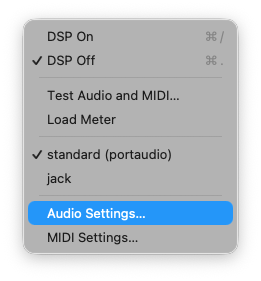
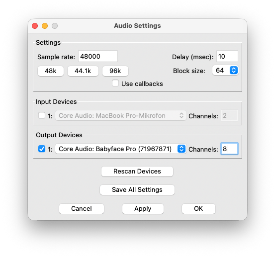
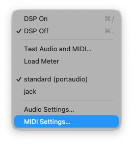
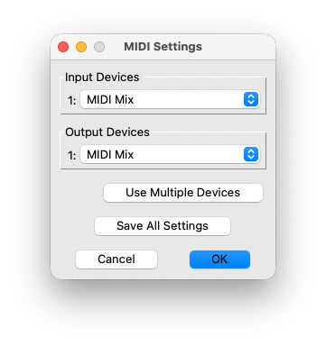
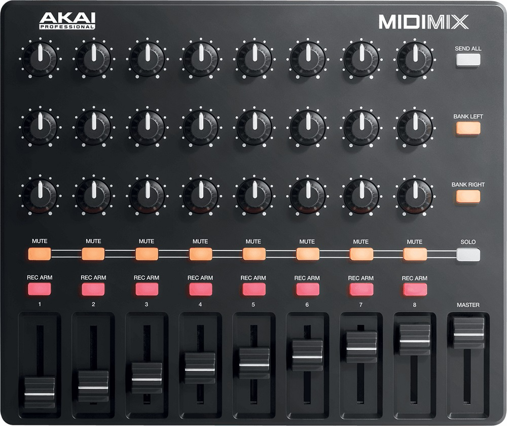
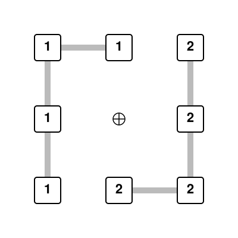
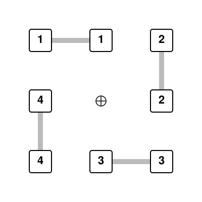
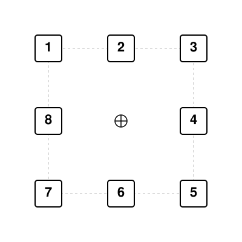

ab-rubin
Rubin
Achim Bornhoeft © 2026
(bass)flute, (bass)clarinet, piano, violin, violoncello | electronics (4ch)
www.bornhoeft.org/works/rubin
TOC
Live Electronics
Made with Pure Data (PD-vanilla, Version PD-0.56-2)
Installation / Setup
Open Patch
Open @main.pd in Puredata
Audio Setup
Select Media - Audio Settings...

- Set the Samplingrate to 48000.
- Set Delay (msec) to 10.
- Select the Audio Interface
- Set Channels to 8

MIDI Setup (Akai MidiMix)
Select Media - Midi Settings...

- Select the MIDI Mix under Input Devices
- Select the MIDI Mix under Output Devices

Akai MidiMix
- row: KNOBS for 8ch playback strings
- row: KNOBS for frequency modulation strings
- row: KNOBS for frequency modulation harmonics (instrument pitches)
- row:
MUTE toggles
- row:
REC ARM toogles
- row: FADER for output channels 1-8 (row 1 - 3), FADER 9 (MASTER) for main volume

Select Loudspeaker Setup
2 speaker (stereophonic)

4 speaker (quadrophonic)

8 speaker (octophonic)

Test Loudspeaker setup (2,4, or 8 channels)
- Press "o" to switch DSP on or click toggle.
- Switch Test on (1) and off (0)
Select manual or automatic fader/knob movements
Switch between manual (0) and automatic (1).
(With no Akai MidiMix select the automatic movements of the fader.)
Amplification of the instruments
If necessary (e.g., in larger concert halls), amplify all instruments and distribute their sound to the front-row speakers according to their positions on stage.
Start Patch
- Press "o" to switch DSP on or click toggle.
- Adjust the Master Fader to the appropriate output level
- Press spacebar to start the session. (It should start with Mark 1, Measure 1)
- Press spacebar again at each rehearsal mark.
Rehearsal Marks in score
- [ 1 ] Measure 1
- [ 2 ] Measure 43
- [ 3 ] Measure 67
- [ 4 ] Measure 98
- [ 5 ] Measure 148
- [ 6 ] Measure 177
Jump to rehearsal mark
- Press "m" to mute playback and FM.
- Select rehearsal mark with number keys 1 - 6.
- Press spacebar to start at relevant rehearsal mark.